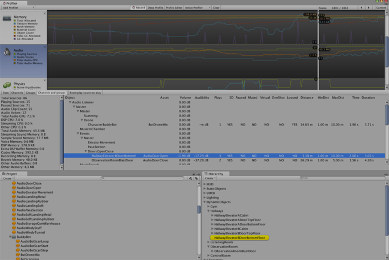

In the Profiler window there is a pane called Audio. The pane monitors significant performance meters about the audio system, such as total load and voice counts. When you highlight the pane, the lower part of the window changes into a detailed view about various parts of the audio system not covered by the graphs.
CPU usage can be seen in the bottom. Monitor this to see if Audio alone is taking up too much CPU.
Additionally, by clicking the Channels / Groups / Channels and groups buttons detailed per-frame logging of sound events can be obtained and scrubbed, just like the renderer and memory graphs. The rows in the frame log reveal information about which audio sources played which clips, the volume at which these were played, the distance to the listener, relative playback time etc. Clicking on one of these rows highlights the associated audio source and clip in the project browser and hierarchy.
Channel view. When clicking a row first the AudioClip asset is highlighted, then the AudioSource in the hierarchy that played it.
 Channels and groups view. Here the AudioSource that played the sound in the selected row is highlighted.